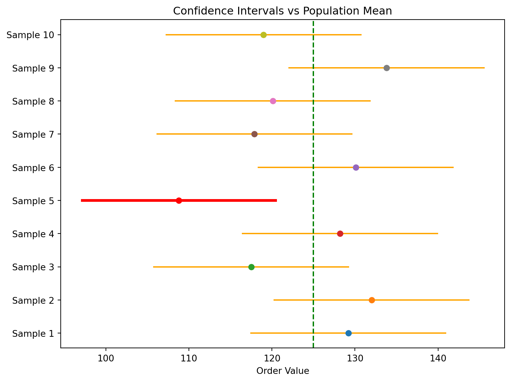
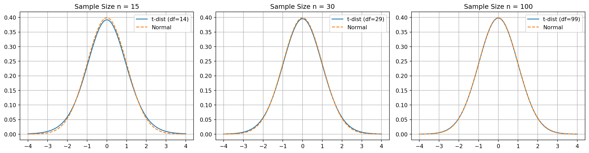

Sampling
Sampling
Karen Hovhannisyan
2026-01-24
Sampling
Population vs Sample
A population is the full group we want to understand.
A sample is a smaller, representative subset used to infer population behavior.
Sampling allows us to study a few to understand the many.
Why Not Measure Everyone?
Measuring every individual is often:
- Too expensive
- Too slow
- Logistically impossible
- Sometimes destructive
A properly selected sample provides reliable insight with far less effort.
Why Businesses Prefer Sampling
Sampling helps organizations:
- Reduce cost and effort
- Make faster decisions
- Handle large, continuous data streams
- Avoid unnecessary measurements
Sampling is a scientific tool, not a shortcut.
Risks of Sampling
Sampling introduces uncertainty because sample values rarely match population values.
- Larger samples reduce error
- Good design prevents bias
- Statistics helps quantify uncertainty
Types of Sampling
- Probability sampling: known chance of selection
- Non-probability sampling: selection probability unknown
We focus mainly on probability-based methods.
Simple Random Sampling
Every population member has an equal chance of selection.

Simple Random
Systematic Sampling | 1
Select every k-th member of a population list.
The sampling constant:
\[ k = \frac{N}{n} \]
- N: population size
- n: sample size

Systematic
Systematic Sampling | 2
Systematic sampling is easier to implement than a pure random sample.
- Risk: If the population has a repeating pattern aligned with \(k\), bias may occur.
- Fix: Randomize the starting point before selecting every k-th observation.
Stratified Sampling | 1
Used when population subgroups differ in ways important to the analysis.
The population is divided into strata, and each stratum is sampled proportionally.
This prevents over- or under-representation, especially when natural differences exist (e.g., junior vs senior engineers).

Stratified
Stratified Sampling | 2
Example proportional allocation (sample size 200):
| Stratum | Population | Pop % | Sample | Calculation |
|---|---|---|---|---|
| Junior | 1200 | 40% | 80 | \(0.40 \times 200\) |
| Mid-Level | 900 | 30% | 60 | \(0.30 \times 200\) |
| Senior | 450 | 15% | 30 | \(0.15 \times 200\) |
| Management | 450 | 15% | 30 | \(0.15 \times 200\) |
| Total | 3000 | 100% | 200 | — |
Cluster Sampling | 1
Typical clusters: classrooms, neighborhoods, branch offices, cities.
Stratified vs Cluster
- Strata are homogeneous (e.g., only juniors).
- Clusters are mini-populations,
Cluster Sampling | 2

Cluser
Bootstrap Resampling
Resampling with replacement to estimate:
- Variability
- Standard errors
- Confidence around model metrics
Does not require strict distributional assumptions.
Bootstrap Resampling

Bootstrap
Probability Sampling Comparison
A visual summary comparing simple random, systematic, stratified, and cluster sampling.

Comparison
Non-Probability Sampling
Used when probability-based design is not possible.
- Convenience sampling: choose whoever is easiest to reach
- Internet polls: fast but biased
Not reliable for inference or population estimates
Sampling Error vs Non-Sampling Error
Sampling Error: Difference between sample statistic and true parameter:
\[ \text{Sampling Error} = \bar{x} - \mu \]
Non-Sampling Error: Survey bias, measurement mistakes, data entry errors, non-response issues.
Cannot be fixed by increasing sample size.
Correction Factor
When the proportion of the sample size is \(> 5%\) we need to apply correction factor.
Correction factor
\[\sqrt{\frac{N - n}{N - 1}}\]
- N: population size
- n: sample size
the higher the sample size the smaller FPC
Correction Factor Effect
Let’s assume our population size is N=100
| Sample Size (n) | Standard Error | Finite Correction Factor | Standard Error with FPC |
|---|---|---|---|
| 40 | 0.111 | 0.778 | 0.086 |
| 60 | 0.090 | 0.636 | 0.057 |
| 80 | 0.078 | 0.449 | 0.035 |
| 100 | 0.070 | 0 | 0 |
Finite Population Correction
When sampling more than 5% of a finite population:
\[ \sigma_{\bar{x}} = \frac{\sigma}{\sqrt{n}} \sqrt{\frac{N - n}{N - 1}} \]
This correction adjusts the standard error to reflect reduced variability when sampling without replacement.
Confidence Intervals
Introduction
One of the most important roles statistics plays is to:
- gather information from a sample
- use that information to make statements about a population
- quantify uncertainty
withconfidence intervals
Confidence Intervals help measure how certain we are about population parameters based on 1 sample.
Point Estimates
A point estimate is a single value used to estimate a population parameter.
- sample mean \(\bar{x}\)
- sample proportion \(\hat{p}\)
They provide only a single best guess of the true population value.
Confidence Interval
A confidence interval for the mean is an interval estimate around a sample mean that provides a range within which the true population mean is expected to lie.
Confidence Level
A confidence level is the probability that the interval constructed from sample data will contain the population parameter of interest.
Confidence Interval Intuition
The purpose of generating a confidence interval is to provide an estimate for the true population mean by combining:
- the sample mean \(\bar{x}\)
- the critical \(z\)-value
- the standard error \(\sigma_{\bar{x}}\)
Confidence Levels
| Confidence Level | α (Significance Level) | α/2 (Each Tail) | Lower zα/2 | Upper zα/2 |
|---|---|---|---|---|
| 90% | 0.10 | 0.05 | -1.645 | 1.645 |
| 95% | 0.05 | 0.025 | -1.960 | 1.960 |
| 99% | 0.01 | 0.005 | -2.576 | 2.576 |
Confidence Intervals for the Mean | known SD
Case Study
For ABC Company we want to construct a CI for the avarage order size, based on sample mean of $129.2 with a 90% confidence level.
we will need:
- the sample size: \(\bar{x}\)
- the population standard deviation \(\sigma\)
Suppose the sample mean was based on the 32 orders (\(n=32\)).
Let’s also assumethe population standard deviation is equal to \(\sigma=40.602\)
\[ \sigma_{\bar{x}} = \frac{\sigma}{\sqrt{n}} = \frac{\$ 40.602}{\sqrt{32}} = \$7.173 \]
Margin of Error (MoE)
\[MoE_{\bar{x}} = z_{\frac{\alpha}{2}}\sigma_{\bar{x}}\]
Confidence Levels:
\[UCL = \bar{x} + MoE\]
\[LCL = \bar{x} - MoE\]
\[ \Downarrow \]
\[MoE_{90} = 1.645 \cdot 7.176 = 11.80\]
\[UCL = 129.2 + 11.8 = 141\]
\[LCL = 129.2 - 11.8 = 117\]
Confindence Intervals
| CL | \(z_{α/2}\) | SE | MoE | LCL | UCL |
|---|---|---|---|---|---|
| 90% | 1.645 | 7.173 | 11.80 | 117 | 141 |
| 95% | 1.960 | 7.173 | 14.06 | 115 | 143 |
| 99% | 2.576 | 7.174 | 18.47 | 110 | 147 |
Confindence Intervals | Multiple Samples
Let’s say the true population mean is 125
| Sample | Sample Mean | Margin of Error | Lower Limit | Upper Limit |
|---|---|---|---|---|
| 1 | 129.20 | 11.80 | 117.40 | 141.00 |
| 2 | 132.00 | 11.80 | 120.20 | 143.80 |
| 3 | 117.50 | 11.80 | 105.70 | 129.30 |
| 4 | 128.20 | 11.80 | 116.40 | 140.00 |
| 5 | 108.80 | 11.80 | 97.00 | 120.60 |
| 6 | 130.10 | 11.80 | 118.30 | 141.90 |
| 7 | 117.90 | 11.80 | 106.10 | 129.70 |
| 8 | 120.10 | 11.80 | 108.30 | 131.90 |
| 9 | 133.80 | 11.80 | 122.00 | 145.60 |
| 10 | 119.00 | 11.80 | 107.20 | 130.80 |
Confidence Intervals describe the long-run performance of the estimation procedure, not certainty about the result of a single sample.
Confindence Intervals | Visual Interpretation
Confidence Intervals | Unknonwn SD
Sample SD
The sample standard deviation can always be computed directly from the data:
\[ s = \sqrt{\frac{\sum (x_i - \bar{x})^2}{n - 1}} \]
When \(\sigma\) is unknown, we cannot rely on the normal distribution to calculate a confidence interval for the mean.
t-distribution
The overall structure of the Confidence Interval formula remains the same:
- \(\sigma \Rightarrow s\)
normal distribution\(\Rightarrow\)t-distributionz-table\(\Rightarrow\)t-tabe
t-distribution

Calculating the Confidence Intervals
- Calculate Sample Mean
- Calcualate the Standard Error
- Calculate the Margin of Error
- Caluclate the Confidence Inervals
Note the Confidence Level/Significance Level (\(\alpha\)) must be given. Let’s assume that the \(\alpha = 0.05\)
Weekly Vistors
The shop owner expects to have more than 90 visiters per week for the sustainable develepment.
| Week | Visitors |
|---|---|
| 1 | 116 |
| 2 | 83 |
| 3 | 89 |
| 4 | 87 |
| 5 | 81 |
| 6 | 109 |
| 7 | 114 |
| 8 | 123 |
| 9 | 102 |
| 10 | 131 |
| 11 | 96 |
| 12 | 74 |
| 13 | 109 |
| 14 | 106 |
| 15 | 118 |
| 16 | 78 |
| 17 | 91 |
| 18 | 98 |
In order to calculate the sample mean and the sample standard deviation we can use excel:
- DF:
COUNT(B2:B19)-1 = 17 - Mean:
AVERAGE(B2:B19) = 100.3 - Standard Deviation | Sample:
STDEV.S(B2:B19) = 16.6 - Critical t-score:
T.INV.2T(alpha, df) = T.INV.2T(0.05,17) = 2.11 - Margin of Error:
CONFIDENCE.T(alpha, sd,n) = CONFIDENCE.T(0.05, 16.6,18) = 8.25
Margin of Error
\[ \hat{\sigma}_{\bar{x}} = \frac{s}{\sqrt{n}} = 3.92 \]
Confidence Levels:
\[UCL = \bar{x} + MoE\]
\[LCL = \bar{x} - MoE\]
\[ \Downarrow \]
\[UCL = 100.3 + 8.25 = 108.55\]
\[LCL = 100.3 - 8.25 = 92.05\]
Sample Size
So far, we have focused on calculating a confidence interval and margin of error for a population when we know:
- The confidence level
- The sample size
- The standard deviation
Now we will try to reverse the process.
Goal
Instead of computing the margin of error from the sample size, we determine the sample size needed to achieve a desired margin of error, given:
- The confidence level
- The population standard deviatio
- too large: wastes resources.
- too small: produces estimates that are not precise enough.
Case Study
A major telecom operator in 2024 needed an accurate estimate of average monthly mobile data usage. With heavy-streaming customers generating most of the traffic, the operator aimed to set plans that balance cost and capacity.
To achieve this at a 95% confidence level with a \(\pm2\) GB margin of error, the operator calculated the sample size required to estimate the population mean efficiently and reliably.
Based on internal analytics, the population standard deviation is believed to be \(\sigma = 8\) GB.
Calculating Sample Size
\[MoE_\bar{x} = z_{\frac{\alpha}{2}} \sigma_{\bar{x}} = z_{\frac{\alpha}{2}} \frac{\sigma}{\sqrt{n}} \Rightarrow \sqrt{n} = \frac{z_{\frac{\alpha}{2}}\sigma}{MoE}\]
\[ n = \left( \frac{z_{\alpha/2}\, 2\sigma}{\text{MoE}} \right)^2 \]
\[ n = \left( \frac{z_{\alpha/2}\, 2\sigma}{\text{MoE}} \right)^2 \]
Remember for a 95% confidence level critical z-value would be \(z_{\alpha/2} = 1.96\)
Calculate and round up:
\[ n = \left( \frac{1.96 \cdot 8}{2} \right)^2 = 61.46 = 62 \]